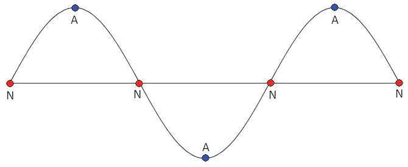

Reflection of Waves
When a wave reaches the end of the medium, its energy is reflected back the way it came.
- The reflected waves and the incident (incoming) waves will interfere with each other.
- When the reflection occurs from a fixed end (e.g. a guitar string), the reflection will be inverted; crests will be reflected as troughs and vice versa.
- Reflections from a free end will not be inverted.
Nodes & Anti-nodes
At a fixed end, destructive interference will occur.
- The incident crest and the reflected trough will cancel each other out.
- A point where the interfering waves cancel is called a node.
- The amplitude will be exactly zero at a node due to the destructive interference.
- For a string fixed at both ends, like a guitar string, both ends must be nodes.
- A place where the incident and reflected waves interfering constructively is called an anti-node.
- Anti-nodes will have a large amplitude.
Standing Waves
Because both ends are nodes, the longest possible wavelength harmonic wave that can be produced on a string with fixed ends will look like this:
Fundamental Standing Wave (\(n = 1\))

- Waves like this are called standing waves because the incident and reflected waves are carrying energy in opposite directions, so that there is no net movement of energy.
- We can see from the illustration above that the length of the string is equal to one-half of a wavelength:$$L = {\lambda\over 2}$$
- This standing wave, with nodes at the ends and nowhere else, is called the fundamental, or first harmonic.
- Standing waves with higher frequencies than the fundamental are called overtones.
- We can produce these higher harmonics by adding more nodes along the string.
- The second harmonic has a node at the middle as well as the ends.
Second Harmonic (\(n = 2\))

Third Harmonic (\(n = 3\))

- We can continue adding more nodes by increasing the frequency to produce higher harmonics.
- The harmonic number (\(n\)) indicates the number of crests and troughs present in the standing wave.
- Since each crest or trough is one-half of a wavelength, we can write an equation relating the wavelength to the harmonic number and the length of the string: $$L=n\left(\frac{\lambda}{2}\right)$$
- Solving for \(\lambda\) and substituting into \(v=\lambda f\) gives: $$\lambda=\frac{2L}{n}$$ $$f_n=\frac{nv}{2L}$$
- This equation tells us that the frequency of the \(n\)’th harmonic is \(n\) times the fundamental frequency.
Air Columns
Sound waves inside a simple air column (open at both ends) form standing waves in the same way that waves on a string do.
- The open ends are “fixed” at atmospheric pressure by virtue of being open.
- The harmonic frequencies for an open air column can be calculated using the equation above, where \(v\) is the speed of sound waves in air.
- For an air column that is closed at one end, only the open end is a node...
- The closed end becomes an anti-node since reflections of the compressions and rarefactions are not inverted.
- As a result, the length of the air column must be a multiple of one-half the length of the compressions or rarefactions (i.e. one-quarter of a wavelength), and the relationships between \(L\), \(\lambda\), and \(f\) become: $$\lambda=\frac{4L}{n}$$ $$f_n=\frac{nv}{4L}$$
- The value of \(n\) in these equations can only be an odd number. If we divided the wavelength by an even number, this would produce nodes at both ends, which is correct for an open air column but not for one that is closed.
Resonance
Resonance is the phenomenon whereby disturbances of initially small amplitude grow to very large amplitudes as a result of constructive interference.
- We saw that pendulums, buildings, and other objects that oscillate a specific frequency will resonate when driven at the resonance frequency.
- A string will begin to oscillate if there is a tuning fork or other source of sound waves at one of the string’s harmonic frequencies.
- Similarly an air column will resonate when there are sound waves at one of the air column’s harmonic frequencies.
- Harmonic frequencies are also called resonant frequencies.